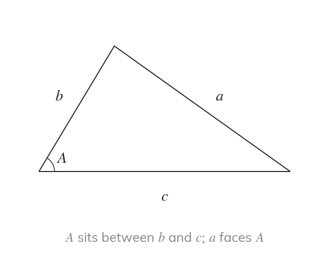
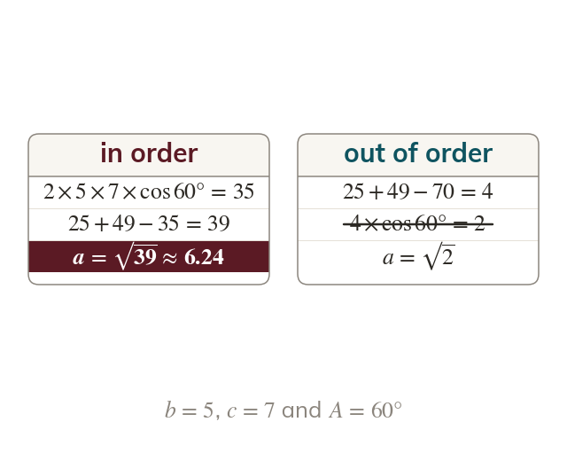
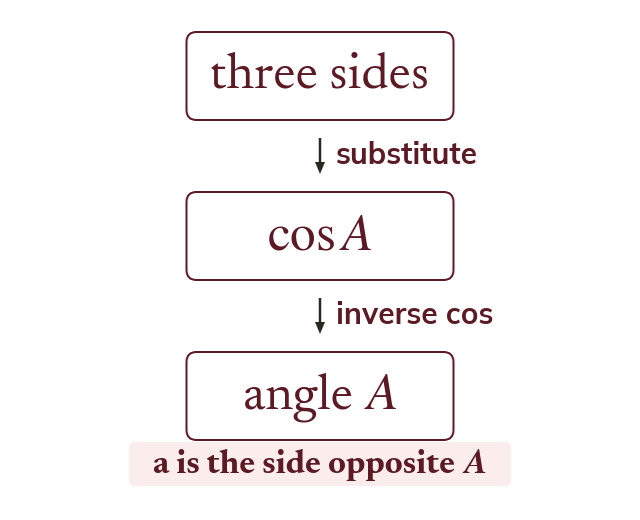
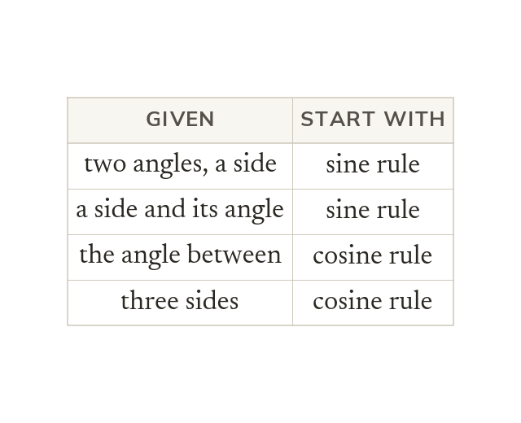
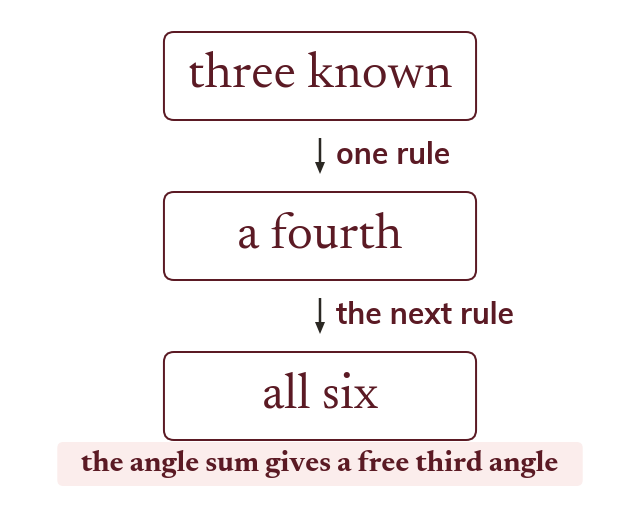

The cosine rule
The cosine rule is It finds a side from two sides and the angle between them.
Two sides and the angle between them, or three sides, leave the sine rule stuck. The cosine rule unlocks those triangles, and choosing between the two rules is the real exam skill.
Work down the page at your own pace. Write every answer in your book first, then click to check it.
Read each card, then follow the worked examples one step at a time.

The cosine rule is It finds a side from two sides and the angle between them.

The term is worked out first, then subtracted. The square root comes last.

Rearranged, it gives That finds any angle from three sides.
Pick an answer. If it's wrong, the feedback tells you which mistake it was.
Section The cosine rule : the questions finding missing sides and angles with the cosine rule.
Read each card, then follow the worked examples one step at a time.

A side with its opposite angle known means the sine rule. Otherwise the cosine rule starts the problem.

Three measurements fix a triangle, as long as one is a side. The other three then follow, one rule at a time.
Pick an answer. If it's wrong, the feedback tells you which mistake it was.
Section Using the sine and cosine rules together : the mixed problems that need a choice of rule, including the bearings problems and the area from three sides.
Finished? Next lesson: 7.5 Problems in Three Dimensions.
For each skill, tap the one that is true for you today. Your Revise pages start with anything you mark Not yet.
Your ratings are saved on this device only.
Log in, then search for a code to practise that skill.